生信基地后台自动回复关键词
原文：https://mp.weixin.qq.com/s?__biz=MzAwMzIzOTk5OQ==&mid=2247538775&idx=1&sn=e3f90254a1dde05a7a3068955cfeb4af&chksm=9b3c2107ac4ba8113e10557c110752361f8b933829eab149469bd6c053f2aafb17df31b43e22#rd 合集：生信基地
写在前面
为方便大家高效、精准地获取全套学习资料与干货内容，我们整理了现有 后台关键词自动回复 ，将所有成套教程、专题资料、知识卡片和实操手册进行系统化分类归档。无需逐一咨询、不用翻找历史记录、无需反复询问，大家只需发送对应专属关键词，即可一键触发自动回复，快速领取对应成体系学习资源。
主要分为四个板块：单细胞/空间转录组/甲基化、编程/服务器/图形可视化、寻因单细胞国自然/云平台/实验基地、招聘。
如果需要单细胞数据分析教学、生信热点全文复现、自测数据个性化分析辅导、实验科研服务和常态化实验学习，欢迎联系客服微信[Biomamba_zhushou]。
单细胞、空间转录组、甲基化—自动回复关键词
· 如果自学困难的同学希望老师手把手教你学单细胞或者空间转录组，后台发送关键词"全程班 "或"培训 "或"生信 "或"保姆级 "，将获得卡片详情：
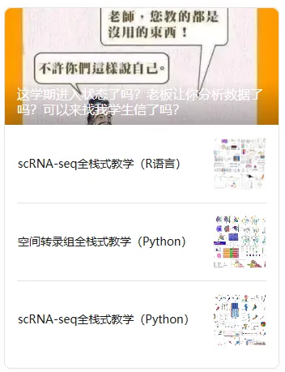
·**** 如果想获得系统的单细胞/空间转录组figure1，后台发送关键词"Figure1 "或"常见 "或"Figure 1 "或"figure "或"figure 1 "或"单细胞Figure1 "或"空间转录组Figure1 "，将获得卡片详情：
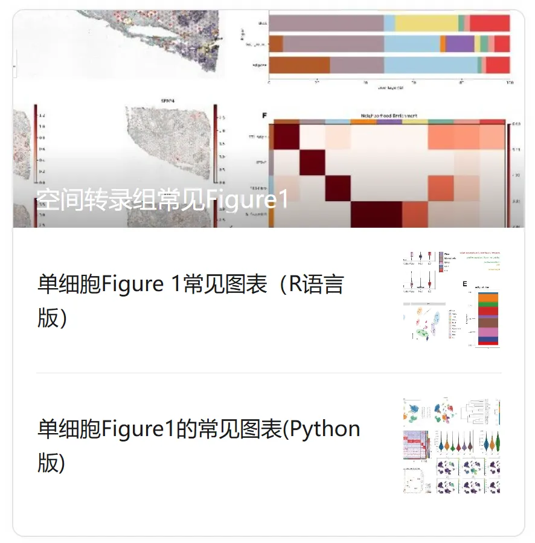
· 如果想获得空间转录组相关资料，后台发送关键词"空转"或"空间转录组"或"ST"或"squid"或"stereo"或"visium"或"space"，将获得链接详情：
空间转录组相关内容请参考合辑：空间转录组
** **
· 如果想了解或学习单细胞基础分析，后台发送关键词"scRNA-Seq学习手册2023_R语言版 "，将获得卡片详情：
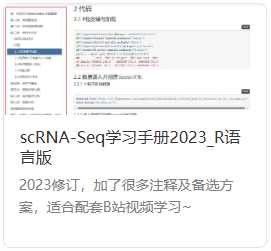
· 如果想了解或学习单细胞拟时序分析，后台发送关键词"拟时序 "或"monocle "或"伪时序 "或"拟时间 "，将获得卡片详情：
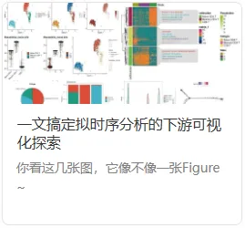
· 如果想了解或学习单细胞和空间转录组的细胞通讯分析，后台发送关键词"细胞通讯 "或"CellphoneDB "或"空转细胞通讯分析 "或"Commot "或"stLearn "或"单细胞细胞通讯分析 "或"CellChat "或"nichenetR "或"CellCall "或"ICELLNET "，将获得卡片详情：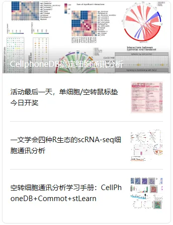
** **· 如果想了解基因共表达网络分析，后台发送关键词"SCENIC "或"转录因子 "或"pyscenic "或"TF "或"regulon "或"基因调控 "或"scenic "，将获得链接和卡片详情：SCENIC转录因子预测可见合辑：SCENIC单细胞转录因子调控预测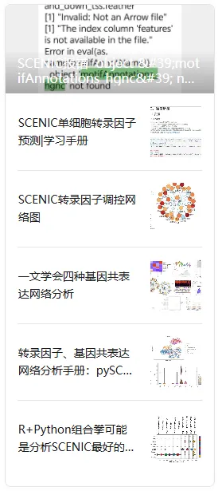
· 如果想了解WGCNA，后台发送关键词"WGCNA "，将获得链接和卡片详情：WGCNA内容可参考合辑：WGCNA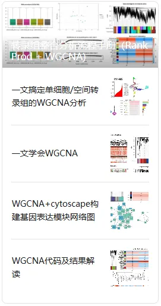
** **
·**** 后台发送关键词"CNV "或"copykat "或"infercnv "或"拷贝数变异 "或"肿瘤细胞 "或"恶性 "或"numbat "或"SCEVAN "，将获得卡片：
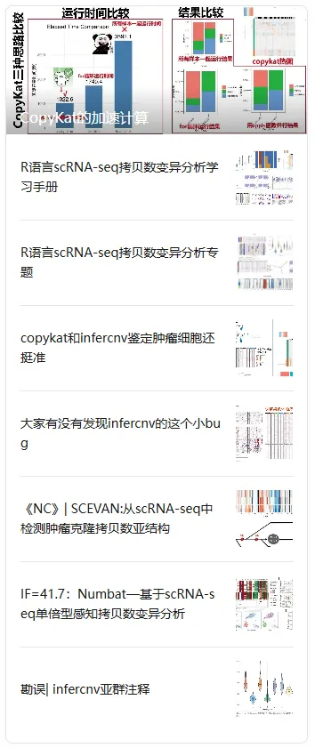
** **
· 如果想了解和学习单细胞虚拟敲除，后台发送关键词"scTenifoldKnk "或"虚拟敲除 "或"模拟干扰 "，将获得卡片：
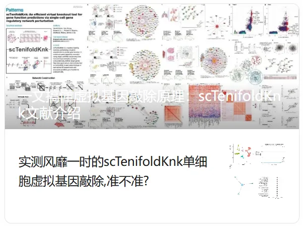
· 如果想获得甲基化内容，后台发送关键词"WGBS "，"甲基化 "，"表观 "，将获得卡片：
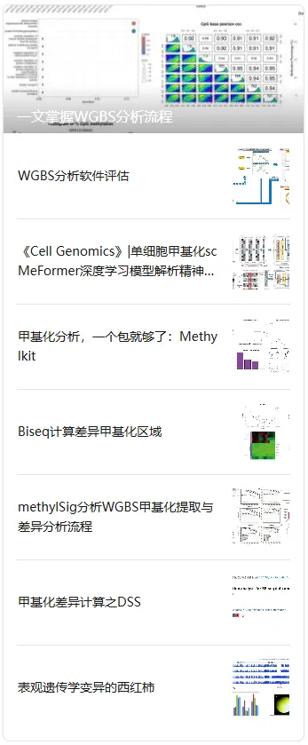
自动回复持续更新中，大家可以持续关注我们~
编程、服务器—自动回复关键词
· 如果想获得整个编程合辑，后台发送关键词"编程合辑 "或"编程合集 "，将获得链接内容：
链接：https://pan.baidu.com/s/1kSXxE6_N44FzDHn3aLQBGA?
提取码联系客服[Biomamba_zhushou]领取或者后台回复相关关键词直接领取
· 如果想获得利用conda打包/复刻生信环境的方法，后台发送关键词"Conda "或"CONDA "或"conda "或"生信环境 "，将获得卡片详情：
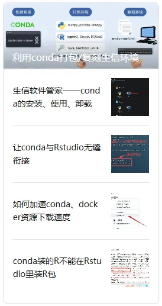
** · 如果想获得Linux常用命令，后台发送"常用Linux命令 "或"linux常用命令 "或"常用linux命令 "，将获得卡片详情：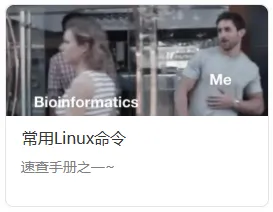
· 如果想系统学习Linux编程，后台发送"Linux "或"WSL "或"子系统 "或"虚拟机 "或"Ubuntu "或"virtualbox "或"oracle "，将获得链接和卡片详情：可查看图文和视频教程集锦：#Linux基础教程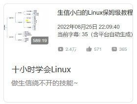
· 如果想了解服务器，后台发送"云服务器 "或"西柚云 "或"共享 "或"独享 "或"root "或"gpu "或"云计算 "，将获得卡片详情：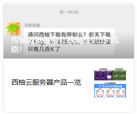
· 购买服务器可领取￥200券，后台发送"200 "或"两百 "或"优惠券 "或"折扣 "，将获得卡片详情：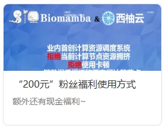
· 如果想获得jupyter相关技术贴，后台发送"jupyter "或"notebook "或"jupyter notebook "或"jupyterlab "，将获得卡片详情：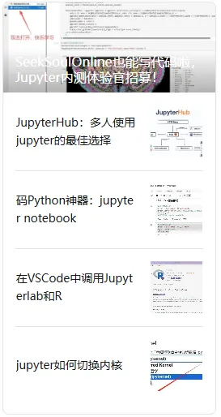
· 如果想系统的学习R语言编程，后台发送"R语言 "或"编程小白 "或"R语言小白 "或"R语言入门 "，将获得链接和卡片详情：R语言入门课：R语言入门课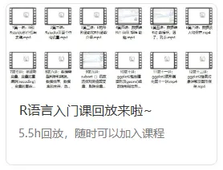
**· 如果想学习更多rstudio技术贴，后台发送"Rstudio "或"Rstudio-server "，将获得卡片详情：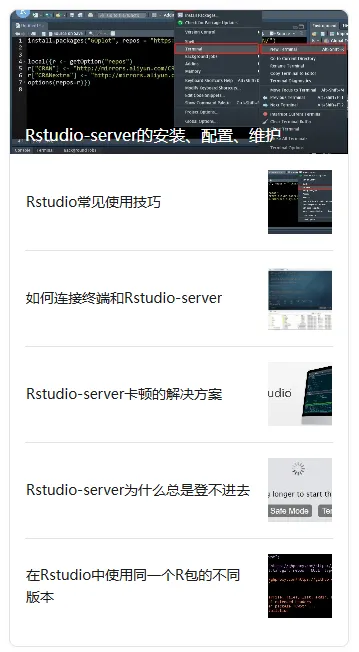
** **
· 如果学习更多相关性分析，后台发送"相关性 "，"person "，"ggcor "，"linkET "，"线性回归 "，将获得卡片详情：
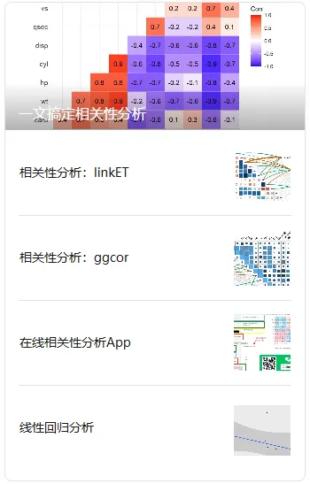
** **
· 如果想获得热图数据，后台发送关键词"热图 "或"heatmap "或"pheatmap "或"complexheatmap "，将获得文件链接和卡片详情：
链接：https://pan.baidu.com/s/1_RHOZk_r1xHuRymmXKldTg
提取码联系客服[Biomamba_zhushou]领取或者后台回复相关关键词领取
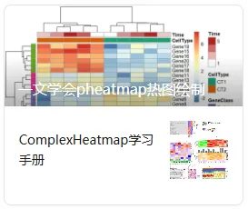
自动回复持续更新中，大家可以持续关注我们~
寻因单细胞国自然/云平台/实验基地
· 如果想了解单细胞国自然相关内容，后台发送关键词"单细胞国自然 "，将获得卡片详情：
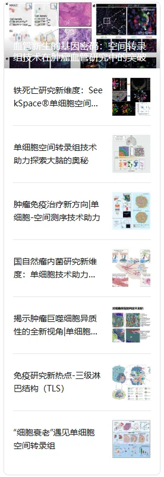
· 如果想了解SeekSoul Online单细胞云平台和实现零代码发单细胞文章，后台发送关键词"云平台 "或"零代码 "或"seeksoul "或"online "或"在线分析 "或"鼠标点点点 "，将获得卡片详情：
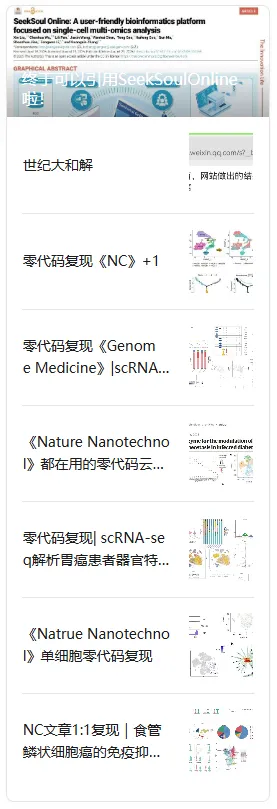
** **
· 如果需要学习湿实验技能或实验科研服务，后台发送关键词"实验 "或"科研服务 "，将获得卡片详情：
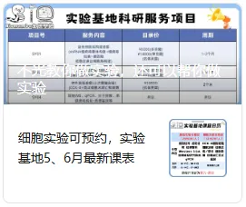
自动回复持续更新中，大家可以持续关注我们~
招聘—自动回复关键词
· 如果想求职/加入生信基地/应聘，后台发送"招聘 "或"加入生信基地 "或"应聘 "，将获得卡片详情：
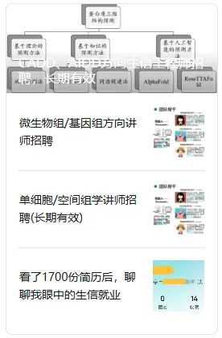
自动回复持续更新中，大家可以持续关注我们~

如何联系我们

 留一个领取资料、开箱即用的单细胞分析镜像的微信号[Biomamba_zhushou]，方便各位随时交流。同时我们也构建了交流群矩阵，欢迎大家入群讨论。
留一个领取资料、开箱即用的单细胞分析镜像的微信号[Biomamba_zhushou]，方便各位随时交流。同时我们也构建了交流群矩阵，欢迎大家入群讨论。
大家可以阅读完这几篇之后添加给生信入门初学者的小贴士 没有检索，就没有发言权
已有生信基地联系方式的同学无需重复添加

 您点的每个赞和在看，我都认真当成了喜欢
您点的每个赞和在看，我都认真当成了喜欢